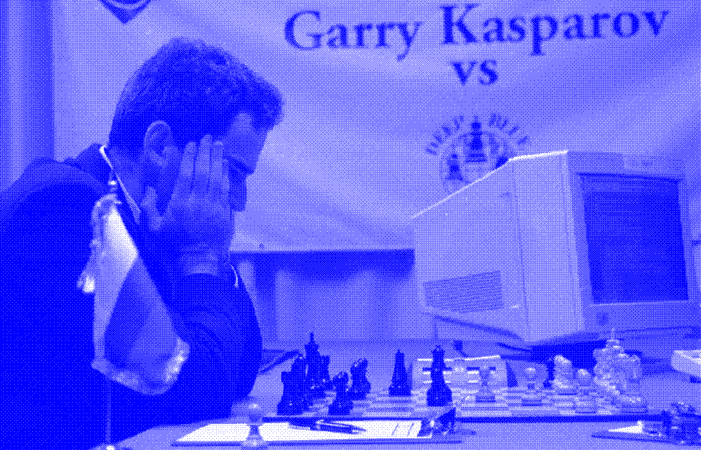
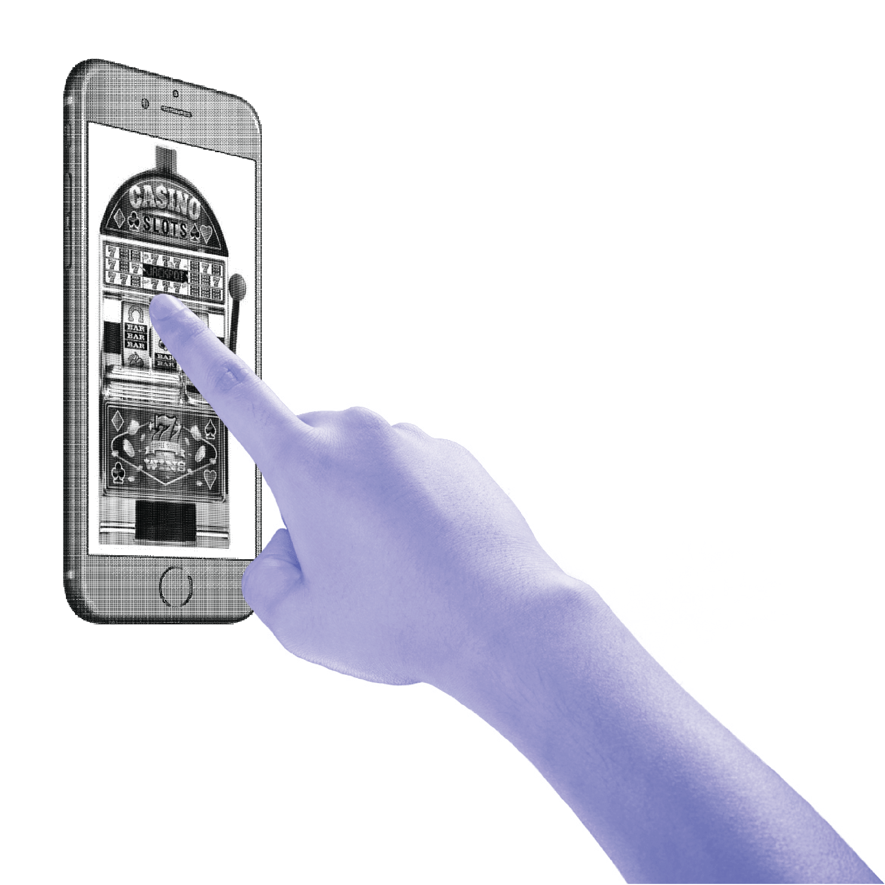
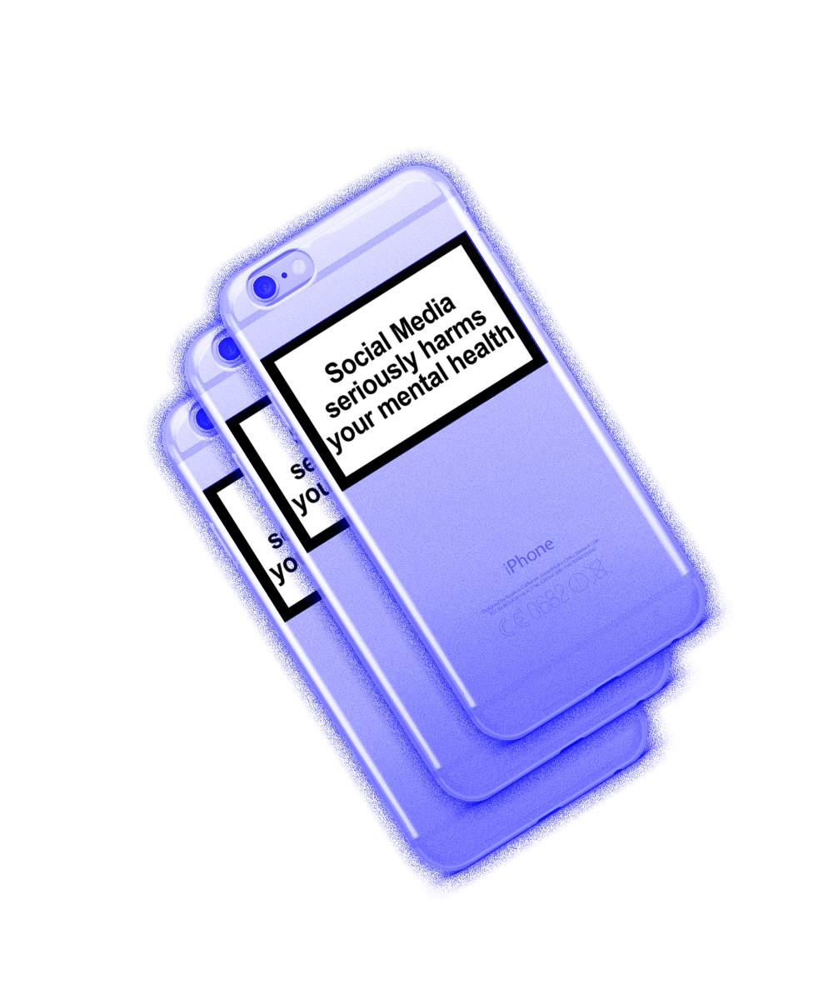
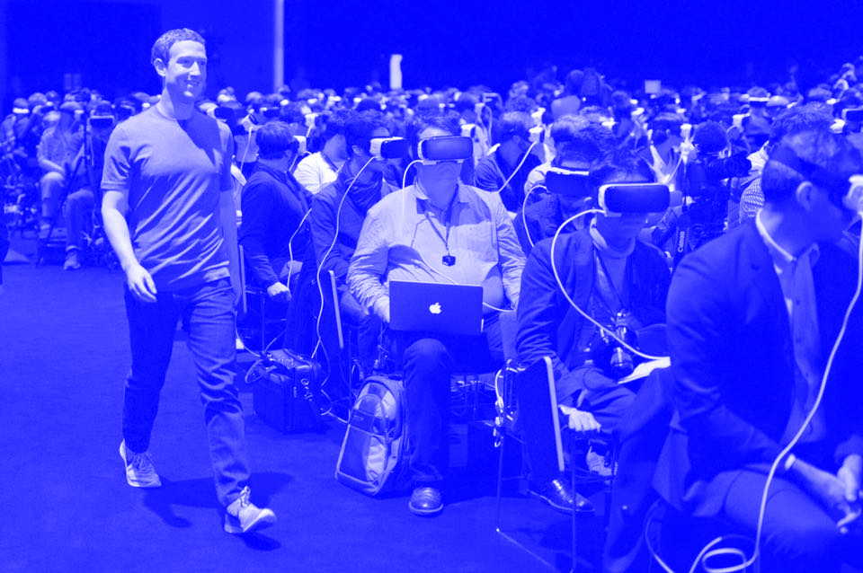

You are reading this because you matter and you have influence. As a designer or a creative, you have the chance to change the history of our world and the way that our digital interactions affect it. We know that in this digital world that we inhabit, there is no neutral surface. Each interaction that we pursue on these screens has a consequence and a data trail behind it.
The internet and the data collection that we once considered free and democratic is being challenged. As we know some of the smartest creators in the world were tasked with engineering systems to influence our buying behavior. The more data they can gather about your personality, the more effective their marketing is. For this reason, the time that we spend on our devices in money for tech companies who are behind our interactions.
With this system of monetized attention in place, we are left with a population of users (over 2 Billion) who are constantly at the mercy of the content that is being served to them. Interact is minimized, auto playing videos and infinite content scrolls are the norm. We're sucked in, with consistently shrinking agency.
What is behind this content that we consume is not the wellbeing of the user. It is an AI-generated system that encourages conspiracy, outrage, and extremeism. This is where we need to pay attention and realise the effects of this system that we have been swallowed into.
The persuasive elements of this medium is powerful. Research and history has shown that with the power of data, elections can be manipulated to the gain of whoever has the most data. What we are now faced with is the apparent end of the democracy that we know of. Humans can can be manipulated. We spend more time that we desire looking at screens that give us information that is tailored to a point of view that may not lead to any sort of wellbeing.
We now need to re-imagine our role as designers in this complex system of manipulation. We need to realize the dangers of the technology that we have access to, and understand that we can change the course of this history. As Yuval Harari has stated, we need to create a new design philosophy. This new way of thinking and designing can be considered in two different action points.
→ 1. We have the duty and the responsibility to spread awareness to the issues of our data, and the malignant and dangerous uses of it.
→ 2. We need to join a force of resistance to the current status of our devices as they are.
Nothing changes without a desire and will to change it, and the pressure of an aggravated, empowered, and inspired force. With the amount of influence that virtual worlds on our screens have, the power of aesthetics is important. Now, graphic design is the barometer of social change. So let us join together to make the change we need.
Web Brutalism can be seen as a "reaction by a younger generation to the lightness, optimism, and frivolity of today's web design". But it needs to be more. This is the aesthetic of refusal. A way of combating the norms that have been presented in flat and clean surfaces with dark intentions. Broken and raw aesthetics on our screens can be a clear way to stand out, and stand against.
We are designers against design. Carefully crafting that which is ugly to fight that which is worse. We promote critical progress and suggest an alternate fate of our interaction that is mindful of all of humans' vulnerabilities. The conversation is open, and it can start right now.